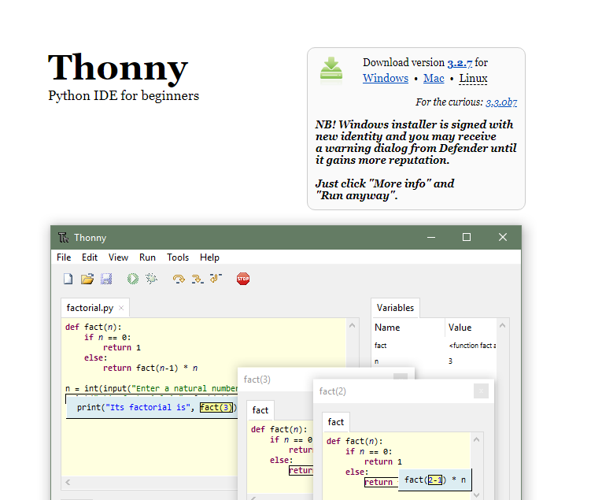
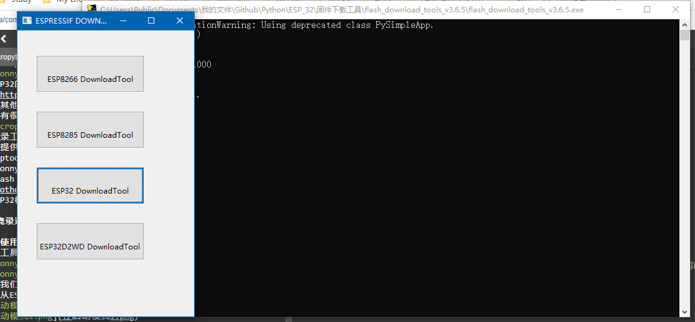
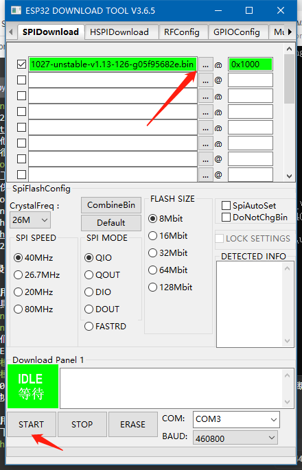
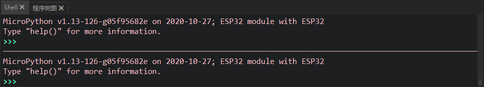

ESP32_micropython固件烧录

ESP32_micropython固件烧录
烧录准备
1.micropython IDE：Thonny

2.ESP32的micropython固件：戳我进下载页面，micropython还支持其他芯片link，下载页面有很多固件选择，由于我的是不带SPIRAM的，因此我选择了第一个。

3.烧录工具：
这里提供两种，esptool在GitHub上有教程，这里就不细讲。
- esptool：github link
- Thonny: micropython IDE
- Flash 下载工具：link

4.ESP32模组
烧录过程
使用Thonny烧录
点击工具栏运行，选择“选择解释器…”


选择我们在Micropython官网下载的固件后点击install
这是从ESP官网上下载的启动模式方法：


即GPIO0和GPIO2全部接地，同时按下复位按键，保持1毫秒再断开GPIO0断开接地（因为GPIO0默认上拉），便开始下载。
使用Flash 下载工具
从官网下载了工具后双击打开，等待几秒后，点击ESP32downloadTools，选择我们在Micropython官网下载的固件后点击START


再按照上文中的启动方法启动即可下载。
成功之后shell会出现下图：

像python一样可以实时输入，ESP32可以直接看到LED灯被点亮